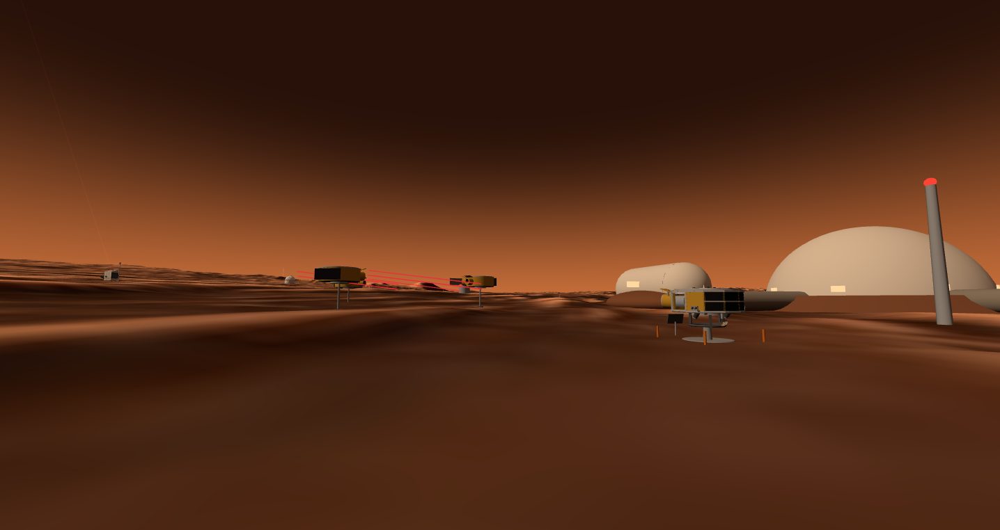
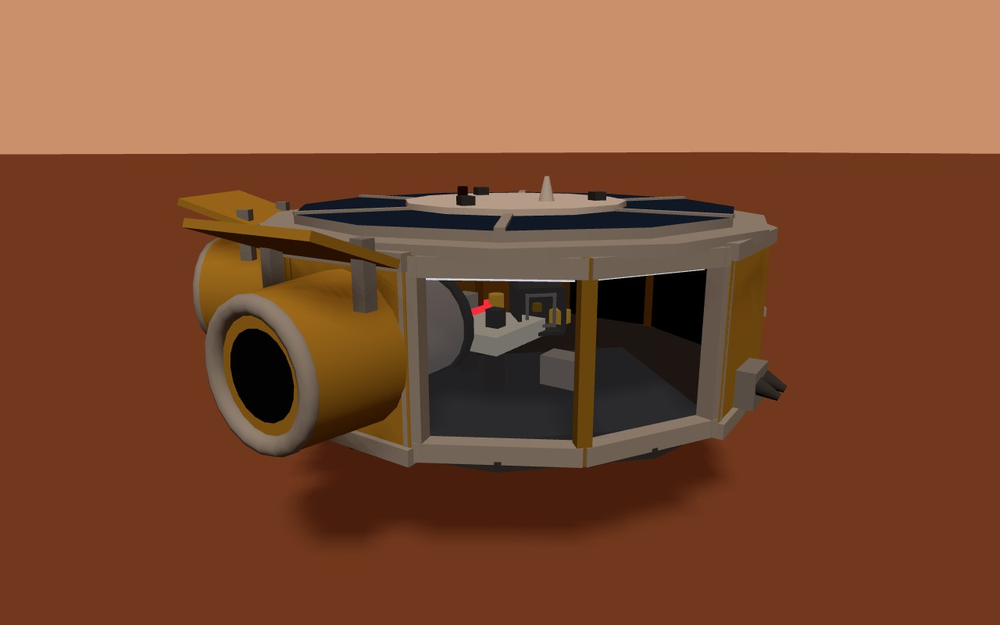
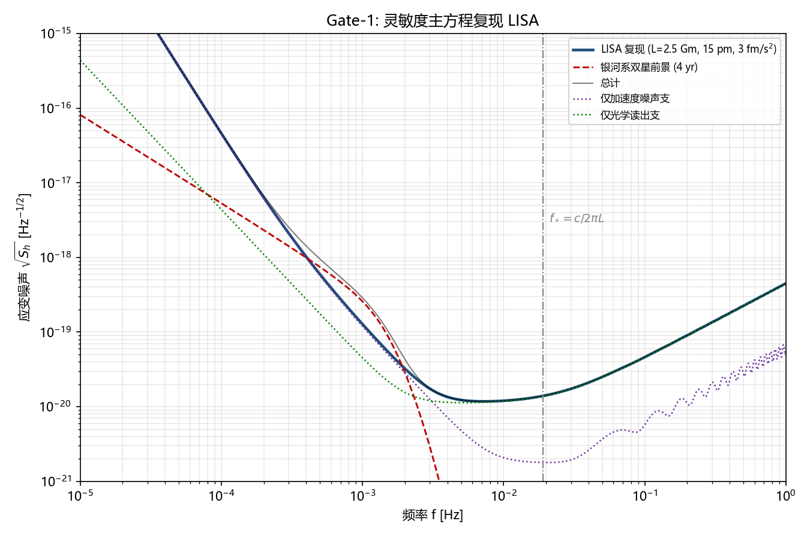
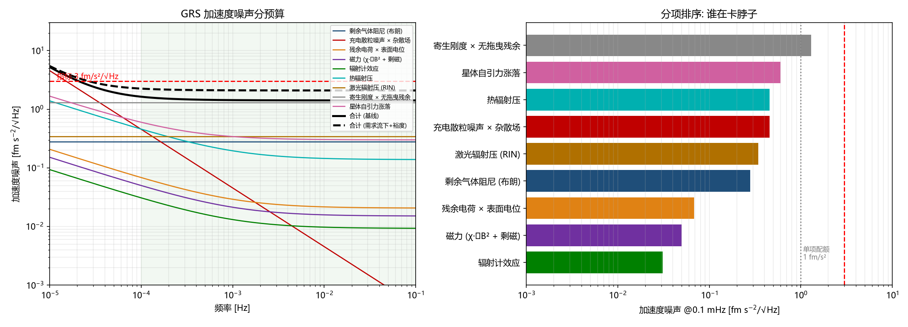

TT-1 GRAVITATIONAL WAVES
A million-kilometre triangle, parked at one five-millionth scale on the plaza outside the undercity gate

The exhibits in town: three-spacecraft constellation on its support ring, the 1:1 flight article beside it — laser links drawn live between apertures

The corrected constellation: heliocentric propagation with Earth perturbation — arm breathing 1.29% peak-to-peak, nobody keyframed it

The cutaway bay: a 46 mm gold test mass in free fall, and the red optical path that watches it

The sensitivity gate: TT-1's strain curve against the LISA reference band — the design's entry ticket

Acceleration-noise budget: every disturbance on the free-falling cube, itemized and summed under the requirement
🛰 Baked orbitsThe exhibit's motion is a 36 s pure-t loop cut from a DOP853 orbit integration (year two of the propagation, tail-blended to close) — 0.21° yaw sway included
📐 Display scaleDeclared, not hidden: 1 Gm = 5 m between spacecraft, spacecraft bodies at 1:1 — both scales printed on the exhibit card
The spacecraftDodecagonal bus, twin 60° telescope shrouds, body-fixed solar wings, colloid microthrusters ×3 clusters, sun-avoiding star trackers — geometry decided by the engineering ledger
📐 Verified9 system sims + Zemax / Lumerical / COMSOL device checks, then a two-agent adversarial review that forced 14 corrections before delivery
📐 Why drag-freeNo reaction wheels, nothing that spins: the whole spacecraft flies formation around its own falling cube — zero rotating parts is a design feature, the exhibit's stillness is the point
In townOn the gate plaza where everyone walks — relocated off the reactor road after the layout audit learned to see roads